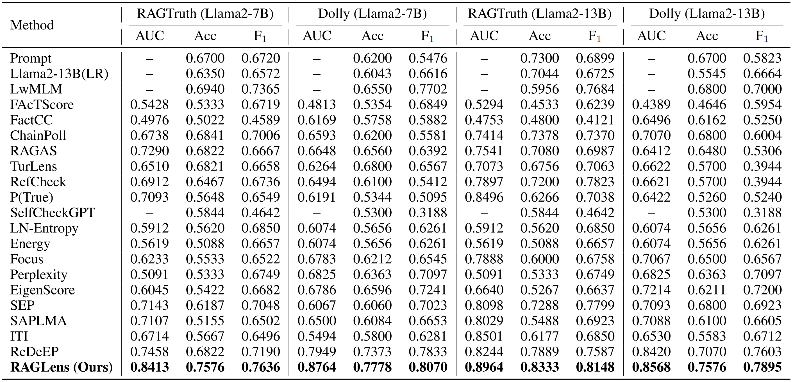
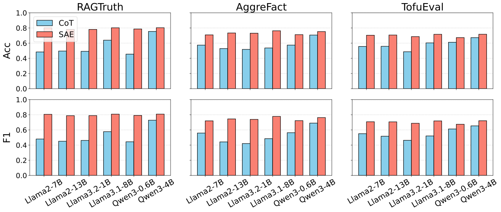

Main Results
We first evaluate RAGLens against prompting-based detectors, uncertainty baselines, and prior methods that also exploit internal model representations. Across RAGTruth and Dolly, the sparse-feature view provides a strong and consistent signal for hallucination detection.
Detection Performance
The main benchmark comparison shows that RAGLens performs strongly across both summarization and question answering settings, outperforming prior baselines on the core evaluation suites.

RAGLens consistently outperforms prior detectors on RAGTruth and Dolly, showing that sparse SAE features provide a practical and effective signal for faithfulness prediction.
Internal Signals vs. Self-Judgment
We also compare sparse internal signals with chain-of-thought style self-judgment. This analysis asks whether the model's latent activations contain faithfulness information that is not fully captured by explicit self-evaluation prompts.

Sparse internal features offer a stronger faithfulness signal than chain-of-thought self-judgment across datasets, suggesting that the model's internal knowledge can be more informative than its explicit critique of its own outputs.